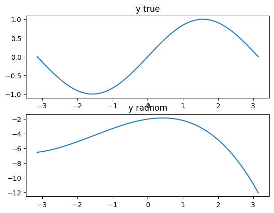
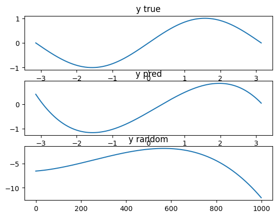

import numpy as npDay3. 머신러닝과 딥러닝
퍼셉트론을 활용한 머신러닝
def AND(x1, x2):
x = np.array([x1, x2]) # 입력
w = np.array([0.5, 0.5]) # 가중치
b = -0.7 # 편향
tmp = np.sum(w*x) + b
if tmp <= 0:
return 0
else:
return 1print(AND(0,0))
print(AND(0,1))
print(AND(1,0))
print(AND(1,1))0
0
0
1def NAND(x1, x2):
x = np.array([x1, x2]) # 입력
w = np.array([-0.5, -0.5]) # 가중치
b = 0.7 # 편향
tmp = np.sum(w*x) + b
if tmp <= 0:
return 0
else:
return 1print(NAND(0,0))
print(NAND(0,1))
print(NAND(1,0))
print(NAND(1,1))1
1
1
0def OR(x1, x2):
x = np.array([x1, x2]) # 입력
w = np.array([0.5, 0.5]) # 가중치
b = -0.2 # 편향
tmp = np.sum(w*x) + b
if tmp <= 0:
return 0
else:
return 1print(OR(0,0))
print(OR(0,1))
print(OR(1,0))
print(OR(1,1))0
1
1
1딥러닝을 활용한 XOR 문제 해결
def XOR(x1, x2):
s1 = NAND(x1, x2)
s2 = OR(x1, x2)
return AND(s1, s2)print(XOR(0,0)) # 0
print(XOR(0,1)) # 1
print(XOR(1,0)) # 1
print(XOR(1,1)) # 00
1
1
0Sin 값 예측하기
import math
import torch
import matplotlib.pyplot as plt
x = torch.linspace(-math.pi, math.pi, 1000)
y = torch.sin(x)
a = torch.randn(())
b = torch.randn(())
c = torch.randn(())
d = torch.randn(())
y_random = a * x**3 + b * x**2 + c * x + d
plt.subplot(2, 1, 1)
plt.title("y true")
plt.plot(x, y)
plt.subplot(2, 1, 2)
plt.title("y radnom")
plt.plot(x, y_random)
plt.show()
learning_rate = 1e-6
for epoch in range(2000):
y_pred = a * x**3 + b * x**2 + c * x + d
loss = (y_pred - y).pow(2).sum().item()
if epoch % 100 == 0:
print(f"epoch{epoch+1} loss:{loss}")
grad_y_pred = 2.0 * (y_pred - y)
grad_a = (grad_y_pred * x ** 3).sum()
grad_b = (grad_y_pred * x ** 2).sum()
grad_c = (grad_y_pred * x).sum()
grad_d = grad_y_pred.sum()
a -= learning_rate * grad_a
b -= learning_rate * grad_b
c -= learning_rate * grad_c
d -= learning_rate * grad_d
plt.subplot(3, 1, 1)
plt.title("y true")
plt.plot(x, y)
plt.subplot(3, 1, 2)
plt.title("y pred")
plt.plot(x, y_pred)
plt.subplot(3, 1, 3)
plt.plot(y_random)
plt.title("y random")
plt.show()
epoch1 loss:1018073.25
epoch101 loss:259.82220458984375
epoch201 loss:211.42466735839844
epoch301 loss:172.73411560058594
epoch401 loss:141.27572631835938
epoch501 loss:115.69705963134766
epoch601 loss:94.89965057373047
epoch701 loss:77.98924255371094
epoch801 loss:64.23966979980469
epoch901 loss:53.059940338134766
epoch1001 loss:43.96979522705078
epoch1101 loss:36.57878875732422
epoch1201 loss:30.56935691833496
epoch1301 loss:25.683107376098633
epoch1401 loss:21.7100830078125
epoch1501 loss:18.479732513427734
epoch1601 loss:15.853113174438477
epoch1701 loss:13.717451095581055
epoch1801 loss:11.98098373413086
epoch1901 loss:10.569087028503418
Using PyTorch
import pandas as pd
import numpy as np
import torch
import torch.nn as nn
import torch.optim as optim
from sklearn.model_selection import train_test_split
import matplotlib.pyplot as plt
import copyLoading the data, EDA and data preparation
df = pd.read_csv("./data/housing.csv")
df = df.dropna().reset_index(drop=True)
df.head(5)| longitude | latitude | housing_median_age | total_rooms | total_bedrooms | population | households | median_income | median_house_value | ocean_proximity | |
|---|---|---|---|---|---|---|---|---|---|---|
| 0 | -122.23 | 37.88 | 41.0 | 880.0 | 129.0 | 322.0 | 126.0 | 8.3252 | 452600.0 | NEAR BAY |
| 1 | -122.22 | 37.86 | 21.0 | 7099.0 | 1106.0 | 2401.0 | 1138.0 | 8.3014 | 358500.0 | NEAR BAY |
| 2 | -122.24 | 37.85 | 52.0 | 1467.0 | 190.0 | 496.0 | 177.0 | 7.2574 | 352100.0 | NEAR BAY |
| 3 | -122.25 | 37.85 | 52.0 | 1274.0 | 235.0 | 558.0 | 219.0 | 5.6431 | 341300.0 | NEAR BAY |
| 4 | -122.25 | 37.85 | 52.0 | 1627.0 | 280.0 | 565.0 | 259.0 | 3.8462 | 342200.0 | NEAR BAY |
xDf = df[
[
"longitude",
"latitude",
"housing_median_age",
"total_rooms",
"total_bedrooms",
"population",
"households",
"median_income"
]
]
df["median_house_value"] = df.apply(lambda row: float(row["median_house_value"] / float(100000)), axis=1)
yDf = df["median_house_value"]
X = xDf.values
y = yDf.valuesX_train, X_test, y_train, y_test = train_test_split(X, y, train_size = 0.7, shuffle = True)
X_train = torch.tensor(X_train, dtype=torch.float32)
y_train = torch.tensor(y_train, dtype=torch.float32).reshape(-1, 1)
X_test = torch.tensor(X_test, dtype=torch.float32)
y_test = torch.tensor(y_test, dtype=torch.float32).reshape(-1, 1)Architecture of the Neural Network
이 연습에서는 신경망의 고전적인 구조인 피라미드 구조를 사용하겠습니다. 이 유형의 신경망에서 각 숨겨진 레이어는 다음 레이어에 연결되며 각 레이어는 이전 레이어보다 작습니다. 입력 계층의 크기는 특징의 수와 같으며, 이 경우 8입니다. 이 예제에서는 하나의 목표(연속적인 값인 집 가격)를 예측하려고 하므로 마지막 계층에 뉴런 하나만 있습니다.
회귀 문제에서는 대상을 완벽하게 정확하게 예측할 수 없으므로 손실 함수로 MSE를 사용하는 것이 좋습니다.
Defining the Model
이제 PyTorch를 사용해 모델을 피라미드 구조의 선형 레이어 시퀀스로 정의하겠습니다. 입력 레이어에는 8개의 뉴런(이것이 우리가 가진 특징의 수)과 단 하나의 출력 뉴런(이것이 우리의 목표인 집값)이 있다는 점에 유의하세요.
model = nn.Sequential(
nn.Linear(8, 24),
nn.ReLU(),
nn.Linear(24, 12),
nn.ReLU(),
nn.Linear(12, 6),
nn.ReLU(),
nn.Linear(6, 1)
)As a loss function we will use MSE and for the optimizer we will use Adam
loss_function = nn.MSELoss()
optimizer = optim.Adam(model.parameters(), lr = 0.001)Defining the training loop
epochs = 400
batchSize = 20
best_mse = np.inf
best_weights = None
history = []
size = X.shape[0]
for epoch in range(epochs):
model.train()
index = 0
while index * batchSize <= size:
X_batch = X_train[index:index + batchSize]
y_batch = y_train[index:index + batchSize]
y_pred = model(X_batch)
loss = loss_function(y_pred, y_batch)
optimizer.zero_grad()
loss.backward()
optimizer.step()
index += batchSize
model.eval()
y_pred = model(X_test)
mse = loss_function(y_pred, y_test)
mse = float(mse)
history.append(mse)
if mse < best_mse:
print(f"best mse is {mse} on epoch {epoch}")
best_mse = mse
best_weights = copy.deepcopy(model.state_dict())
model.load_state_dict(best_weights)best mse is 6.128345966339111 on epoch 0
best mse is 4.747837066650391 on epoch 1
best mse is 4.726436138153076 on epoch 2
best mse is 4.378176212310791 on epoch 3
best mse is 4.287140369415283 on epoch 5
best mse is 4.082657337188721 on epoch 6
best mse is 3.8813700675964355 on epoch 7
best mse is 3.604973316192627 on epoch 8
best mse is 2.6447768211364746 on epoch 9
best mse is 2.5121638774871826 on epoch 10
best mse is 1.7982743978500366 on epoch 11
best mse is 1.647772192955017 on epoch 12
best mse is 1.5655877590179443 on epoch 13
best mse is 1.4794301986694336 on epoch 14
best mse is 1.4520149230957031 on epoch 15
best mse is 1.4172937870025635 on epoch 16
best mse is 1.3881410360336304 on epoch 17
best mse is 1.3622167110443115 on epoch 18
best mse is 1.2826541662216187 on epoch 19
best mse is 1.2210208177566528 on epoch 20
best mse is 1.1112759113311768 on epoch 21
best mse is 1.1039745807647705 on epoch 22
best mse is 1.0982367992401123 on epoch 23
best mse is 1.0963279008865356 on epoch 24
best mse is 1.089799404144287 on epoch 25
best mse is 1.0830093622207642 on epoch 30
best mse is 1.0713061094284058 on epoch 31
best mse is 1.0708402395248413 on epoch 32
best mse is 1.068825125694275 on epoch 33
best mse is 1.05531907081604 on epoch 34
best mse is 1.0497716665267944 on epoch 35
best mse is 1.0382816791534424 on epoch 36
best mse is 1.0312730073928833 on epoch 37
best mse is 1.0244638919830322 on epoch 38
best mse is 1.019054889678955 on epoch 39
best mse is 1.0077873468399048 on epoch 41
best mse is 1.007314920425415 on epoch 42
best mse is 0.9989040493965149 on epoch 43
best mse is 0.9963122606277466 on epoch 44
best mse is 0.9906237125396729 on epoch 46
best mse is 0.9681081175804138 on epoch 47
best mse is 0.9679588675498962 on epoch 48
best mse is 0.9636338949203491 on epoch 49
best mse is 0.9365105628967285 on epoch 51
best mse is 0.9349256753921509 on epoch 59
best mse is 0.9318903684616089 on epoch 60
best mse is 0.9142102003097534 on epoch 63
best mse is 0.9138439297676086 on epoch 65
best mse is 0.9086882472038269 on epoch 66
best mse is 0.9014654755592346 on epoch 67
best mse is 0.8996442556381226 on epoch 68
best mse is 0.8988744616508484 on epoch 72
best mse is 0.8975339531898499 on epoch 73
best mse is 0.8964466452598572 on epoch 74
best mse is 0.8934708833694458 on epoch 75
best mse is 0.8881350755691528 on epoch 77
best mse is 0.8869858980178833 on epoch 79
best mse is 0.8848766088485718 on epoch 80
best mse is 0.8816877603530884 on epoch 81
best mse is 0.8811050057411194 on epoch 83
best mse is 0.8774977326393127 on epoch 85
best mse is 0.8737624883651733 on epoch 86
best mse is 0.8732728362083435 on epoch 88
best mse is 0.8731635808944702 on epoch 93
best mse is 0.8614754676818848 on epoch 98
best mse is 0.8488722443580627 on epoch 159
best mse is 0.8383627533912659 on epoch 160
best mse is 0.8242272138595581 on epoch 161
best mse is 0.8041302561759949 on epoch 162
best mse is 0.799055278301239 on epoch 166
best mse is 0.7923058867454529 on epoch 168
best mse is 0.7869041562080383 on epoch 170
best mse is 0.7707822918891907 on epoch 171
best mse is 0.7557774186134338 on epoch 172
best mse is 0.7529003024101257 on epoch 174
best mse is 0.7306028008460999 on epoch 176
best mse is 0.7285521626472473 on epoch 177
best mse is 0.7085898518562317 on epoch 180
best mse is 0.7069340944290161 on epoch 183
best mse is 0.6941869854927063 on epoch 184
best mse is 0.6871175169944763 on epoch 187
best mse is 0.6768085360527039 on epoch 188
best mse is 0.674870491027832 on epoch 192
best mse is 0.6707104444503784 on epoch 193
best mse is 0.6658936142921448 on epoch 196
best mse is 0.6569523811340332 on epoch 198
best mse is 0.6482753753662109 on epoch 199
best mse is 0.6455034017562866 on epoch 203
best mse is 0.637505292892456 on epoch 205
best mse is 0.6342315077781677 on epoch 206
best mse is 0.6324762105941772 on epoch 207
best mse is 0.6312294602394104 on epoch 208
best mse is 0.6305112838745117 on epoch 209
best mse is 0.6167631149291992 on epoch 212
best mse is 0.6097006797790527 on epoch 216
best mse is 0.6043913960456848 on epoch 217
best mse is 0.6026005148887634 on epoch 218
best mse is 0.5929579734802246 on epoch 219
best mse is 0.589219331741333 on epoch 221
best mse is 0.5780711770057678 on epoch 224
best mse is 0.5773553848266602 on epoch 226
best mse is 0.5717324018478394 on epoch 227
best mse is 0.5657535791397095 on epoch 230
best mse is 0.5491172075271606 on epoch 236
best mse is 0.5466038584709167 on epoch 238
best mse is 0.5438665151596069 on epoch 239
best mse is 0.5391550064086914 on epoch 243
best mse is 0.5359430313110352 on epoch 251
best mse is 0.5355218648910522 on epoch 268<All keys matched successfully>print("MSE: %.4f" % best_mse)MSE: 0.5355MSE의 경우, 값이 100000으로 나뉘어져 있으므로 실제 가치는 약 50000 달러이다.
Plotting the learning curve
plt.plot(history)
plt.title("MSE evolution by Epoch")
plt.xlabel("MSE")
plt.ylabel("Epoch")Text(0, 0.5, 'Epoch')